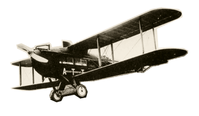

Чтобы поддержать Международный васюкинский турнир

посетите лекцию на тему: «Плодотворная дебютная идея»
и Сеанс одновременной игры в шахматы на 160 досках гроссмейстера О. Бендера
По всем вопросам обращаться в администрацию к К. Михельсону
Этапы преображения Васюков
Будущие источники обогащения васюкинцев
- 1Строительство железнодорожной магистрали Москва-Васюки
- 2Открытие фешенебельной гостиницы «Проходная пешка» и других небоскрёбов
- 3Поднятие сельского хозяйства в радиусе на тысячу километров: производство овощей, фруктов, икры, шоколадных конфет
- 4Строительство дворца для турнира
- 5Размещение гаражей для гостевого автотранспорта
- 6Постройка сверхмощной радиостанции для передачи всему миру сенсационных результатов
- 7Создание аэропорта «Большие Васюки» с регулярным отправлением почтовых самолётов и дирижаблей во все концы света, включая Лос-Анжелос и Мельбурн
1Строительство железнодорожной магистрали Москва-Васюки
2Открытие фешенебельной гостиницы «Проходная пешка» и других небоскрёбов
3Поднятие сельского хозяйства в радиусе на тысячу километров: производство овощей, фруктов, икры, шоколадных конфет
4Строительство дворца для турнира
5Размещение гаражей для гостевого автотранспорта
6Постройка сверхмощной радиостанции для передачи всему миру сенсационных результатов
7Создание аэропорта «Большие Васюки» с регулярным отправлением почтовых самолётов и дирижаблей во все концы света, включая Лос-Анжелос и Мельбурн